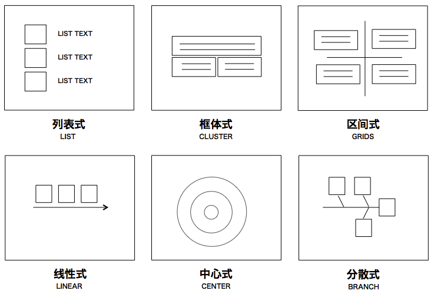
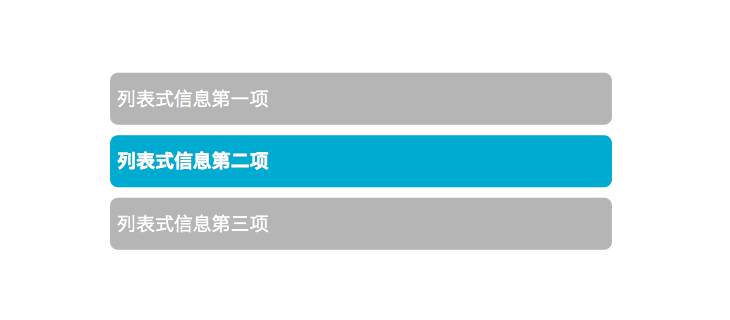
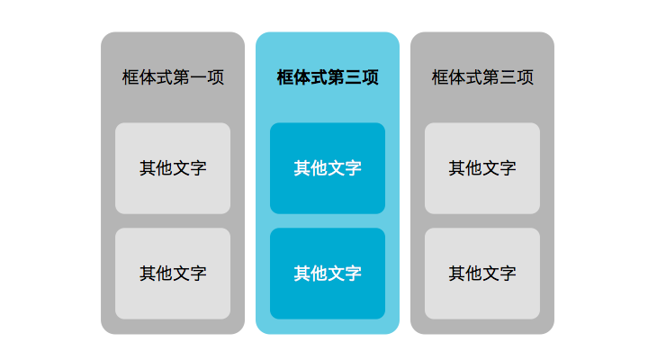
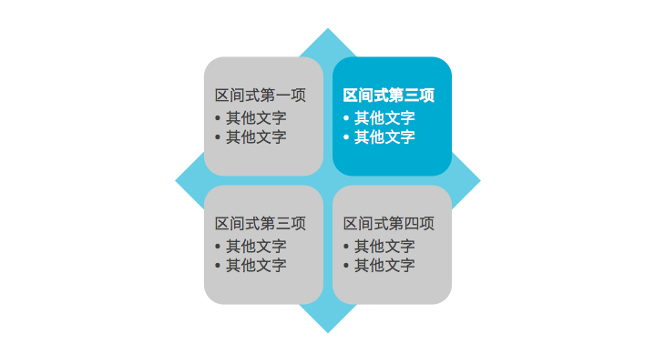
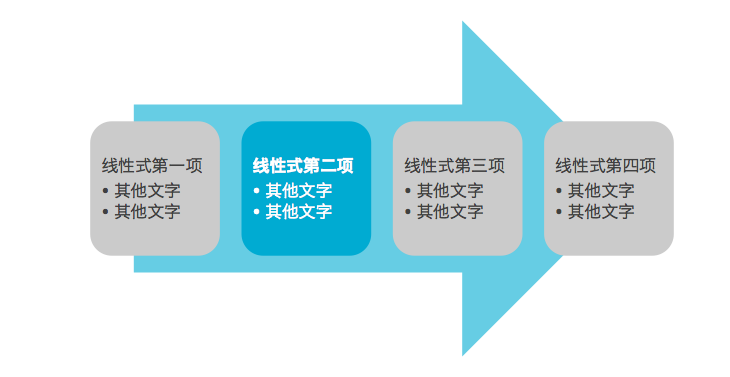
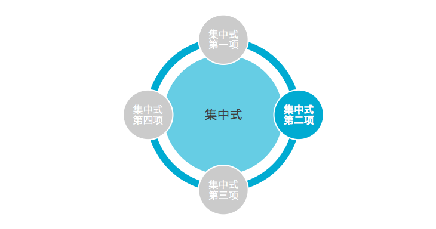
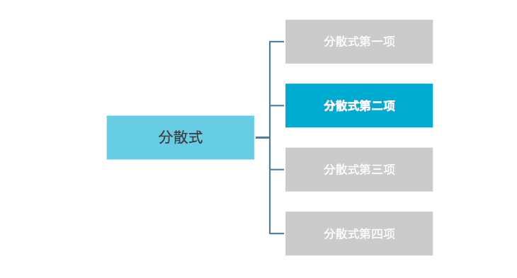
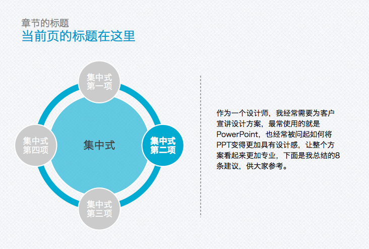
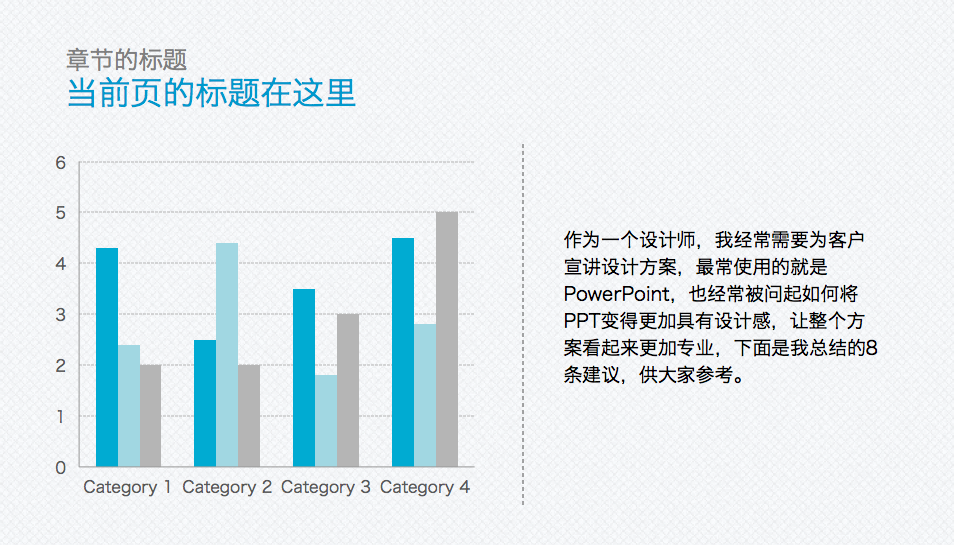

SmartArt是PowerPoint自带的信息图插件，可以自动生成各式各样的信息图，有助于听众对讲演内容的逻辑有更好的理解。但是SmartArt的问题一是所支持的格式太多，让人无从选择，而是自动生成的样式视觉复杂度较高（参考第一篇），因此我们有必要了解信息表达的几种信息组织基础模式（Pattern），与PPT相关的信息组织基础模式有以下六种：

- 列表式：用于表达同样类型的多项信息
- 框体式：用于表达相对独立或暗含关系的多项信息
- 区间式：用于表达多个维度不同评价的多项信息
- 线性式：用于表达有时间概念的过程
- 中心式：用于表达核心信息周围的组件信息
- 发散式：用于表达发散的多项信息间从属关系
绝大部分的信息都可以在这六种基础模式中找到影子，因此可以有针对性地培养自己对每种信息组织模式的设计能力，套用同样一个视觉风格，比如重点元素和非重点元素以及指导性元素（如箭头，圆圈等）的色彩搭配，基于SmartArt已有的模版，建立一个自己的信息模版，所有类似信息都使用同样一套模版，而不是不停新建。如下面的例子对应六个基本模式：
     
注意在上面的例子里我去除了很多不需要的视觉复杂度，并遵循了只使用一种主色，使得整个信息表达清楚干净，为了使得整个页面更加干净，我尝试在背景上增加一些质感，并增加些信息引导工具，最后变成了这个样子：

此外关于图表的制作也可以考虑这样的方式，制作一些风格一致的柱状图或饼图，作为模版以备不时之需，如下图所示：

写在最后
关于SmartArt在PPT设计中的几点总结如下：
- 学会利用SmartArt表达信息;
- 注意降低SmartArt默认的视觉复杂度;
- 学会识别信息的6种基本组织模式，建立自己的模版;
- 同样建立风格化的图表;